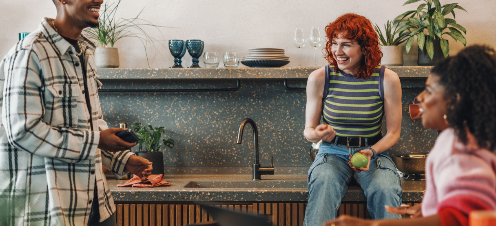

List Project

UX review presentation Bringing Design Process to Teams, How to Solve User Problems with Data & Inclusive Collaboration Designons
There are many different design processes that can be followed when creating a hotel management dashboard. Here are some tips for bringing a design process to teams and using data and inclusive collaboration to solve user problems
Card link Another link